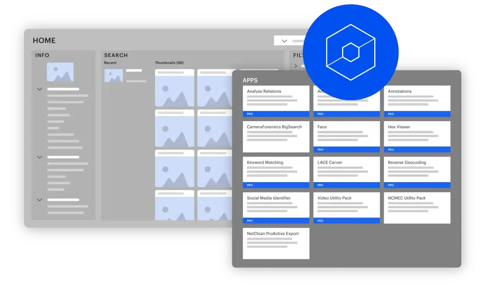
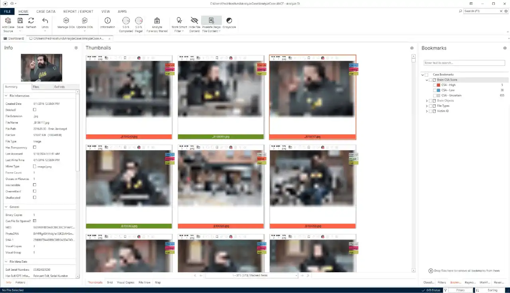
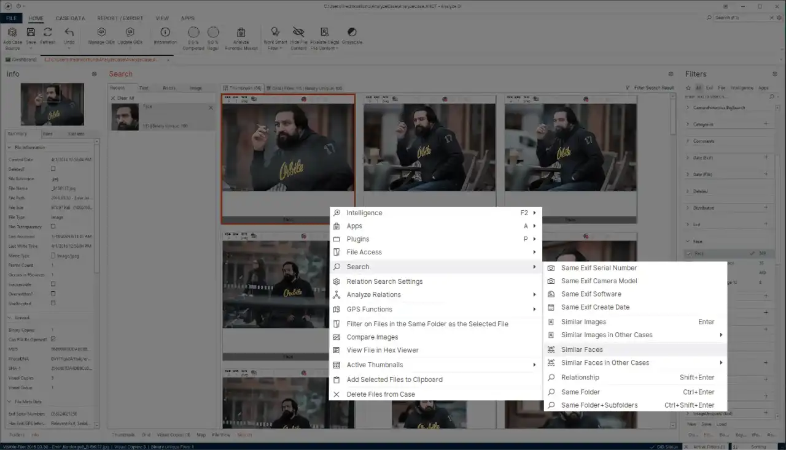
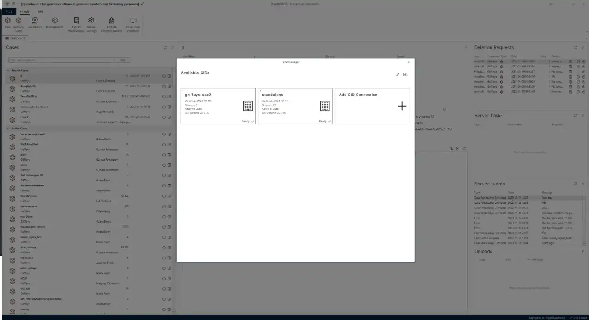
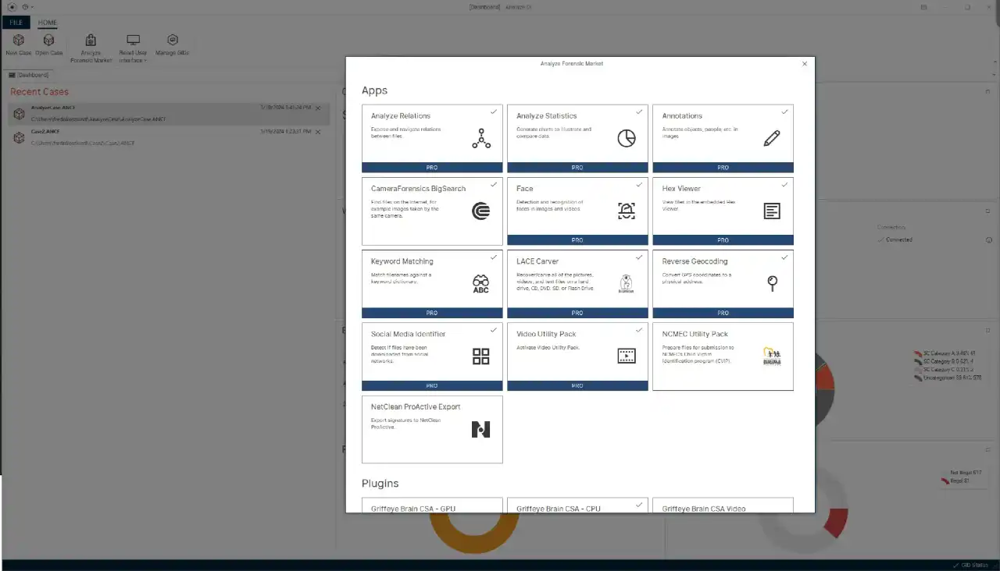

请访问原文链接：Magnet Griffeye (Analyze DI) 24.1.2 Windows - 快速处理和分析大量数字媒体 查看最新版。原创作品，转载请保留出处。
作者主页：sysin.org

将数字媒体过载转化为调查洞察 快速处理和分析大量图像和视频。
凭借强大的分析和协作能力在调查中保持领先地位，在数字媒体分析中获得关键优势。

功能特性
通过先进的图像和视频处理和分析、协作案例处理以及共享工作负载功能，提升您的数字媒体调查。
自动化、检测、确定优先级
高级媒体分析
大规模协作
开放、模块化、可扩展
自动化、检测、确定优先级

Magnet Griffeye 负责处理繁重的数据提升工作 (sysin)，使调查人员能够专注于需要他们关注的以人为中心的任务。
要点：
- 清楚地了解从哪里开始调查并确定与案件最相关的数据。
- 利用 Brain 和 Thorn.AI 等 AI 技术自动检测和分类大型媒体集中的各种类别和对象，以及识别和标记描述 CSAM 的媒体。
- 通过对已知数据进行预先分类 (sysin)、堆叠重复数据以及关联媒体文件中的元数据和视觉属性，节省宝贵的时间和精力。
- 即将推出：T3K.AI CORE - 通过快速、准确的媒体筛选增强媒体分析能力。
高级媒体分析

访问一组强大的分析特性、功能和灵活的工作流程，以获得无缝、高效的体验。
要点：
- 快速查找并匹配不同个体的所有图像和视频，并在数据之间搜索以识别嫌疑人或受害者的匹配面孔。
- 使用运动、面部和基于对象的搜索等高级过滤功能 (sysin)，在很短的时间内快速准确地查看数小时的视频片段。
- 通过旨在最大限度地减少接触有害物质的多种功能来增强调查员的福祉。
大规模协作

Magnet Griffeye 采用了尖端技术，旨在互连调查人员并使信息共享成为一个无缝过程。
要点：
- 建立与多个 GID 数据库（包括 NCMEC 等外部来源）的连接，以便与国内或国际范围内的研究人员无缝协作。
- 哈希值和附加情报可以轻松上传到任何共享 GID，以便其他调查人员直接访问正在进行的和以前的案件。
- 轻松识别以前查看过的媒体并减少需要查看的案例文件数量。
开放式和模块化

释放专为灵活性而设计的开放式模块化平台的潜力。定制 Magnet Griffeye 以满足您的需求 — 轻松集成外部资源和工具，让您可以根据需求的变化添加新功能。
要点：
- 探索应用程序和附加组件的动态市场，包括第三方选项。
- 轻松定制和增强功能 (sysin)，始终拥有适合工作的最佳工具。
- 新的创新工具不断添加和更新。
系统要求
OS: 64-bit Windows version 10
- Windows 10
- Windows 11
- Windows Server 2016, OVF
- Windows Server 2019, OVF
- Windows Server 2022, OVF
- Windows Server 2025, OVF
Processor: ntel Core i5 or AMD Ryzen 5, Recommended Intel Core i7, Intel Xeon, AMD Ryzen 7 or AMD Threadripper
Memory: 16GB, Recommended 32GB
Disk: 250GB SSD, Recommended 500GB SSD
Display: One display with a resolution of 1680x1050 or higher, Recommended Display Two or more displays with a resolution of 1680x1050 or higher
下载地址
Magnet Griffeye (formerly Griffeye Analyze DI) 24.1.2 for Windows
相关产品：
- Magnet Axiom 10.1 for Windows x64 Multilingual - 专业数字取证与分析平台
- Magnet DVR Examiner 3.24 for Windows - 视频取证软件
- Magnet Griffeye (Analyze DI) 24.1.2 Windows - 快速处理和分析大量数字媒体
- Magnet Acquire 2.71 Windows - 适用于智能手机和计算机的数字取证采集工具
更多：HTTP 协议与安全

文章用于推荐和分享优秀的软件产品及其相关技术，所有软件提供免费版或试用版。内容若侵犯了您的版权，请联系作者删除。如果您喜欢这篇文章，或者觉得它对您有所帮助，亦或发现有不当之处；欢迎发表评论，也欢迎分享这个网站，或者赞赏一下，谢谢！提示：捐赠或赞赏属于自愿赠予行为，提交后即表示您对作者的支持与认可。为避免误操作，请在确认前仔细检查金额，支付完成后将无法撤销或退还。
 支付宝赞赏
支付宝赞赏  微信赞赏
微信赞赏赞赏一下
敬请注册！点击 “登录” - “用户注册”（已知不支持 21.cn/189.cn 邮箱）。 请勿使用联合登录（已关闭）。